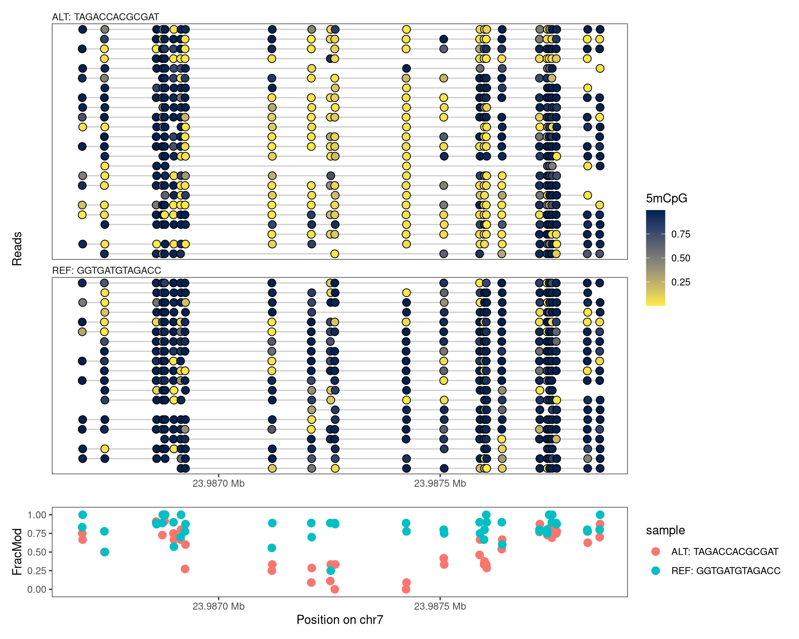
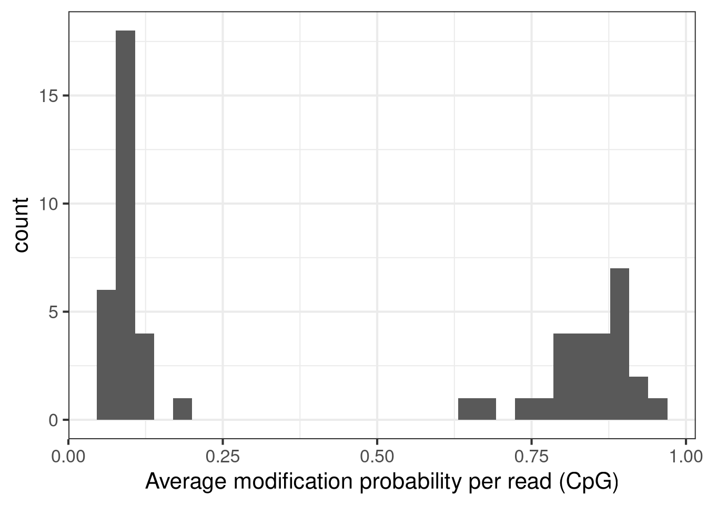
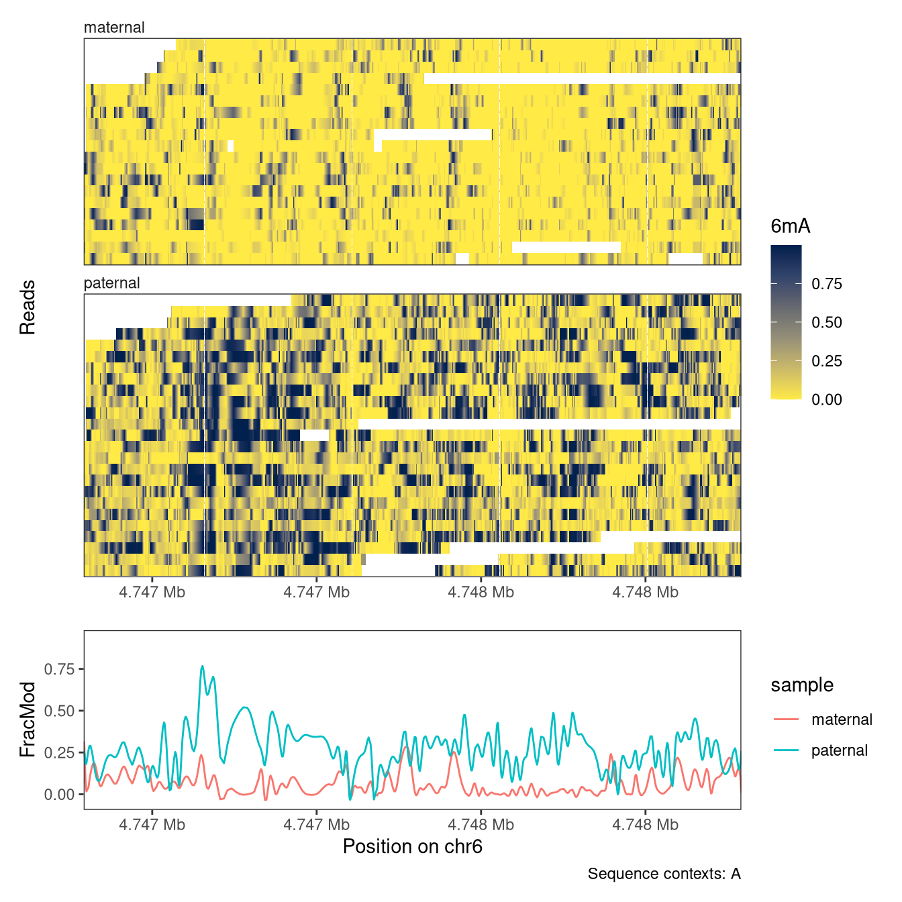

BSgenomeName <- "BSgenome.Mmusculus.GENCODE.GRCm39.gencodeM34"
library(footprintR)
library(ggplot2)
library(patchwork)
library(GenomicRanges)
library(SummarizedExperiment)
library(BSgenomeName, character.only = TRUE)
library(VariantAnnotation)
library(stringdist)
# Load genome
gnm <- get(BSgenomeName)
genome(gnm) <- "mm39"7 Grouping reads
When reading data with footprintR, the reads will automatically be grouped by sample (i.e., the name assigned to each input files). As we have seen in earlier chapters, this is reflected by the columns of the SummarizedExperiment object generated by the reading functions corresponding to samples, with individual reads stored in a nested fashion within the samples. In practice, this means that any summary statistics, e.g. calculated by flattenReadLevelAssay, will be calculated by sample, and plotRegion will facet the reads by sample. In some situations, we may wish to group the reads by something other than the sample that they stem from. How to achieve this will be the focus of the current chapter.
7.1 Preparation
We first load the packages and the genome needed for these tasks.
7.2 Using sequence variation
One reason for regrouping reads could be to sort them using genetic variation (e.g., single nucleotide variants), e.g. with the purpose of studying allele-specific signals. Typically, the heterozygous loci on which we would like to base such read grouping are known in advance (alternatively, we can use all positions within a given genomic region). In such cases, readModBam can automatically add “sequence labels” (consisting of the observed nucleotide in the indicated positions) to reads when reading the data, and these labels can later be used to regroup the reads.
Let’s consider an example. We start by defining a region of interest, and reading a file with known heterozygous SNVs (for the purposes of this report, we have subset the complete VCF file to only SNVs overlapping the region of interest, but this is not necessary in general).
reg <- resize(as("chr7:23987184-23987363", "GRanges"), width = 1300, fix = "center")
hetsnv <- readVcf("data/het_snp_chr7_23987184-23987363.vcf.gz")
hetpos <- as(rowRanges(hetsnv), "GPos")
hetpos$ALT <- unlist(hetpos$ALT)
hetposUnstitchedGPos object with 13 positions and 5 metadata columns:
seqnames pos strand | paramRangeID REF ALT QUAL FILTER
<Rle> <integer> <Rle> | <factor> <DNAStringSet> <DNAStringSet> <numeric> <character>
chr7:23986770_G/T chr7 23986770 * | NA G T 504.609 .
chr7:23986885_G/A chr7 23986885 * | NA G A 485.725 .
chr7:23987082_T/G chr7 23987082 * | NA T G 421.622 .
chr7:23987109_G/A chr7 23987109 * | NA G A 420.142 .
chr7:23987130_A/C chr7 23987130 * | NA A C 509.378 .
... ... ... ... . ... ... ... ... ...
chr7:23987468_A/G chr7 23987468 * | NA A G 480.559 .
chr7:23987586_G/C chr7 23987586 * | NA G C 425.562 .
chr7:23987658_A/G chr7 23987658 * | NA A G 336.694 .
chr7:23987665_C/A chr7 23987665 * | NA C A 338.173 .
chr7:23987670_C/T chr7 23987670 * | NA C T 372.650 .
-------
seqinfo: 61 sequences from an unspecified genomeWe next generate “expected” REF and ALT sequences by concatenating the sequences of the heterozygous SNVs overlapping the region of interest. These sequences will later be used to group reads into one of two categories (REF or ALT), based on the agreement with the expected sequences. Note that with this approach, we’re making the implicit assumption that the SNVs are phased (and thus that a read will not typically harbor a mix of the REF and ALT nucleotides) - for most reads in our example this turns out to be a valid assumption, but in other cases other grouping schemes may be preferable.
# subset to SNVs in region of interest
hetpos1 <- subsetByOverlaps(hetpos, reg, ignore.strand = TRUE)
(seqREF <- paste(as.character(hetpos1$REF), collapse = ""))[1] "GGTGATGTAGACC"(seqALT <- paste(as.character(hetpos1$ALT), collapse = ""))[1] "TAGACCACGCGAT"Next, we generate two versions of the genome sequence, obtained by injecting, respectively, the REF and ALT nucleotide above into the corresponding positions. These genomes will later be used to generate sequence contexts for the positions seen in the data, and filter out positions that are not annotated as (in the case below) CpGs. For more information about filtering, and how it can reduce the effect of sequencing errors, see Chapter 3 and Chapter 4.
gnmREF <- gnmALT <- getSeq(gnm)
for (chr in names(gnmREF)) {
i <- which(seqnames(hetpos) == chr)
gnmREF[[chr]] <- replaceLetterAt(x = gnmREF[[chr]],
at = start(hetpos)[i],
letter = unlist(hetpos$REF[i]),
verbose = interactive())
gnmALT[[chr]] <- replaceLetterAt(x = gnmALT[[chr]],
at = start(hetpos)[i],
letter = unlist(hetpos$ALT[i]),
verbose = interactive())
}After this preparation, we read the data. In this case, we will work with a modBam file from a wild-type sample, for which 5mCpG modification calling has been performed. We specify the positions of the heterozygous SNVs to the variantPositions argument, which will generate a sequence label for each read.
seC <- readModBam(
bamfiles = "data/mESC_wt_5mCG_5hmCG_rep2.bam",
regions = reg,
modbase = "m",
level = "read",
variantPositions = hetpos1,
trim = TRUE,
BPPARAM = BiocParallel::SerialParam(),
verbose = interactive()
)
# derived sequence labels
seC$readInfo$s1$variant_label [1] "TATACTGCGCGAT" "TAGACCAAGCCA-" "TAT-CAAGGCGAT" "TATAC--------" "GGAGATGTAGACC" "TAGACCA-GCGAT" "GGTGATGTAGACC"
[8] "TAGACCACGCGAT" "GGTGA-GTAGACC" "TGCACACCGCAAT" "CATACTACGGG-T" "GGTGATGTAGACC" "GGTGACGTAGACC" "TAGACCA-GCGAT"
[15] "TAGACTACGCGAT" "-A-ACTGTGCA-C" "TAGACCACGCGAC" "GGTGATGTAGACC" "TAGACCACGCGAT" "GGTGATGTAGAT-" "TAGACCACGCGAT"
[22] "TAGACCACGCGAT" "TAGACCACGCGAT" "GATGATGTAGGCC" "GGTGATGTAGACC" "GGTGATGTAGATA" "GGTGATGTAGACC" "-ATAC-A-GTGAT"
[29] "GGTGATGTAGACC" "TAGA-CATGCGGT" "GGTGATG-AGACC" "TATACCACGCGAT" "TAGACTACGCGAT" "TAGACCACGCGAT" "TAGACCACGCGAT"
[36] "TAGACCACGCGGT" "TAGACTACGCGAT" "GGTGATGTAGACC" "GGTGATGTAGACC" "TAGACCACGCGAT" "TGGACCACGCGAT" "TAGA-CACGCGAT"
[43] "GGTGATGTAGACC" "GGTGATGTAGACC" "-ATACCACGCGA-" "-GTGATGTAGACC" "--TGATGTAGACC" "--TGATGTAGATC" "----CCACGCGAT"
[50] "-------TGCGCT" "-------TAGACC" "-------TAGACC" "--------AGACC" "----------GAT" "----------ACC" "-------------"
[57] "-------------"Next, we filter the data by sequence context, to only retain positions annotated as CG in both the REF and ALT genomes generated above. We achieve this by sequentially adding the sequence context from each of the genomes, and filtering by this sequence context.
# REF genome
seC <- addSeqContext(x = seC, sequenceContextWidth = 3,
sequenceReference = gnmREF)
seC <- filterPositions(seC, filters = "sequenceContext",
sequenceContext = "NCG", assayNameNA = "mod_prob")
seC <- addSeqContext(x = seC, sequenceContextWidth = 3,
sequenceReference = gnmALT)
seC <- filterPositions(seC, filters = "sequenceContext",
sequenceContext = "NCG", assayNameNA = "mod_prob")With the clean data, we next cluster the reads into two groups, based on which of the two expected sequences (seqREF or seqALT above) the respective sequence labels are most similar to. We request a Hamming distance of at most 0.34 based on the positions covered by the read - otherwise, the read is assigned to an NA category
(varlabels <- structure(
unlist(lapply(seC$readInfo, "[[", "variant_label"), use.names = FALSE),
names = unlist(lapply(seC$readInfo, rownames), use.names = FALSE)))s1-6e3b7da7-1cbb-467a-9824-e12f949740b9 s1-74ec6632-693e-4e13-a8a4-4946fa63f477 s1-f6296e8a-c87d-4ae0-8e5c-ed928ada2544
"TATACTGCGCGAT" "TAGACCAAGCCA-" "TAT-CAAGGCGAT"
s1-cd98081d-7042-4ce7-8a6e-67c835c5242d s1-ca720391-dd3b-4448-8388-ec7bafe86221 s1-07c46b8a-69cf-4a1d-87cd-d787193c56d8
"TATAC--------" "GGAGATGTAGACC" "TAGACCA-GCGAT"
s1-8a78dd6b-5ec1-4caf-959c-bb13647fec0d s1-c6860136-5766-487e-b264-34e0820e81ad s1-2b6c19d4-553c-4986-b8cd-27f71205a23a
"GGTGATGTAGACC" "TAGACCACGCGAT" "GGTGA-GTAGACC"
s1-889002b9-1f49-4b54-a6ae-becfc63973ba s1-8086a333-caa3-4fe0-a24e-eb0477ab70da s1-c3eda2bf-3db4-4c01-8535-b70a764dcce8
"TGCACACCGCAAT" "CATACTACGGG-T" "GGTGATGTAGACC"
s1-ec9c9f06-9f37-47da-a9de-9f872a28622d s1-5dc9d447-fd02-4493-8c12-2de2b705f0a7 s1-c23f32ba-6e41-4238-8f2f-5d7dc567094c
"GGTGACGTAGACC" "TAGACCA-GCGAT" "TAGACTACGCGAT"
s1-6b217655-278b-4a52-b76a-60e0b919e1bc s1-b8ec4fdc-2339-4a7a-acea-8d36a8c6191e s1-f7b1f575-bfad-46ee-bf0a-c252f41998e5
"-A-ACTGTGCA-C" "TAGACCACGCGAC" "GGTGATGTAGACC"
s1-d09a3082-8290-4a64-a1b0-16b955e9d377 s1-47422c66-d8d9-4cd5-bc63-253f8c664ce4 s1-e21ea203-8b2b-4db3-82e7-3872c3aedbdb
"TAGACCACGCGAT" "GGTGATGTAGAT-" "TAGACCACGCGAT"
s1-6fe85a60-5c2b-4ab9-8eb8-c31c9823c52c s1-16ed4c6b-d7c4-45cf-a0ee-b5417715bd05 s1-4db7595b-53a5-43a0-8f26-4bf7c4eb8e2c
"TAGACCACGCGAT" "TAGACCACGCGAT" "GATGATGTAGGCC"
s1-b292d6ed-c3f1-4996-8c09-758ee688d157 s1-8147266c-9bdf-48c1-95a2-3a8fe543072f s1-144ab6dd-2c83-4116-b742-f0767a0d78bd
"GGTGATGTAGACC" "GGTGATGTAGATA" "GGTGATGTAGACC"
s1-bd1e55f8-aa2d-4746-9018-769f3c2cf7cc s1-0298ccd2-51a4-4567-bd62-9f7c08ebe222 s1-4e1b345e-d1a2-470c-b123-096f1b89ffc9
"-ATAC-A-GTGAT" "GGTGATGTAGACC" "TAGA-CATGCGGT"
s1-ab4e005c-d6bd-46c0-bf70-880811d9a4cb s1-f47dafdf-2e54-473c-8c91-de47074168c8 s1-f972a57a-22e0-4dda-9cbd-c9a9546ef7d4
"GGTGATG-AGACC" "TATACCACGCGAT" "TAGACTACGCGAT"
s1-bc571ef1-141b-499f-a0ec-f8ed4d304b36 s1-f93df80d-7a5b-40fe-a704-611e87857ef7 s1-bedd36a7-b697-4ade-8d9d-84c21a7a1bce
"TAGACCACGCGAT" "TAGACCACGCGAT" "TAGACCACGCGGT"
s1-197fa983-613c-40cf-bfc6-195d57250b61 s1-09ca0166-cded-466c-90d7-074b76f6c462 s1-39a0b0f7-ed43-44a4-931f-649b94858fd5
"TAGACTACGCGAT" "GGTGATGTAGACC" "GGTGATGTAGACC"
s1-1575671f-db5c-4840-8903-e049f5d1c191 s1-13cf1365-9558-4731-b905-9375968236ce s1-cf62e24a-3b16-4984-9dce-722d83114a04
"TAGACCACGCGAT" "TGGACCACGCGAT" "TAGA-CACGCGAT"
s1-635eac53-bf72-4595-8f0a-ed25889ade7c s1-6bce848a-e1e3-4c58-ae13-782de5ad8353 s1-f8708894-fcdc-4bb4-b4f0-85962022c458
"GGTGATGTAGACC" "GGTGATGTAGACC" "-ATACCACGCGA-"
s1-21af2d84-95cc-4038-92de-ca10dc907c1b s1-18b3d1ae-13bc-4167-a62d-985df0226d5d s1-84372ce1-9eb4-49a1-bfdf-0fcfe550a1e3
"-GTGATGTAGACC" "--TGATGTAGACC" "--TGATGTAGATC"
s1-2e5ac26d-fb0d-4960-a990-717820ea5489 s1-a11ee0c2-efe1-49db-a777-fd693d49f644 s1-77d34112-3371-4dc4-90e2-c5fce537de28
"----CCACGCGAT" "-------TGCGCT" "-------TAGACC"
s1-1193f97a-20eb-43b0-856f-6ce487960d71 s1-ceaddd34-9916-435c-8d7d-624ee5aa2f7c s1-be1188b2-5e8e-4c3b-b1c9-f745fb787f02
"-------TAGACC" "--------AGACC" "----------GAT"
s1-30b6af10-7d70-4ace-b40a-4fdb7d97d600 s1-4c257eb0-b51a-4e0d-bb99-fc072f15f8fd
"----------ACC" "-------------" dists <- stringdistmatrix(a = c(seqREF, seqALT),
b = varlabels, method = "hamming",
nthread = 2) / nchar(varlabels[1])
methGroup <- ifelse(colMins(dists) < 0.34,
paste0(c("REF", "ALT"), ": ", c(seqREF, seqALT))[apply(dists, 2, which.min)], NA)
table(methGroup, useNA = "ifany")methGroup
ALT: TAGACCACGCGAT REF: GGTGATGTAGACC <NA>
24 20 12 Based on this read grouping, we can now regroup the reads in such a way that the columns of the SummarizedExperiment object corresponds to allele (REF or ALT) rather than the sample. This is achieved with the regroupReads function.
# generate named list of read groups
methGroupList <- split(names(varlabels), methGroup)
# regroup reads
seCgrouped <- regroupReads(seC, methGroupList)
# calculate average modification fraction by allele
seCgrouped <- flattenReadLevelAssay(seCgrouped, keepReads = TRUE)
# plot
plotRegion(seCgrouped, region = reg,
tracks = list(
list(trackData = "mod_prob", trackType = "Lollipop",
legendTitle = "5mCpG"),
list(trackData = "FracMod", trackType = "Point",
arglistPoint = list(size = 3)))) +
plot_layout(heights = c(7.5, 1.5))
In this example, we notice a clear difference in methylation between the two alleles.
7.3 Modification based
As an alternative to the genetic grouping used above, we could also group the reads based on the observed data. To exemplify this, we will look at a known imprinted locus in the Peg10 gene, split the reads based on the average CpG methylation in the locus, and compare the levels of 6mA modifications between the groups.
First, we read the CpG methylation data and filter positions to only retain those in a CpG context.
peg10 <- as("chr6:4746792-4748791", "GRanges")
seC <- readModBam(
bamfiles = "data/mESC_wt_5mCG_5hmCG_rep2.bam",
regions = peg10,
modbase = "m",
sequenceReference = gnm,
sequenceContextWidth = 3,
seqinfo = seqinfo(gnm),
trim = TRUE,
BPPARAM = BiocParallel::SerialParam(),
verbose = interactive()
)
seC <- filterPositions(
seC,
filters = "sequenceContext",
sequenceContext = "NCG"
)Next, we calculate the average modification fraction per read. We note a clear bimodality of the distribution, and define two groups of reads based on this.
# calculate average modification fraction per read
avgmod <- colMeans(as.matrix(assay(seC, "mod_prob")), na.rm = TRUE)
ggplot(data.frame(avgmod = avgmod), aes(x = avgmod)) +
geom_histogram() +
labs(x = "Average modification probability per read (CpG)") +
theme_bw(base_size = 16)`stat_bin()` using `bins = 30`. Pick better value with `binwidth`.
read_groups <- split(colnames(as.matrix(assay(seC, "mod_prob"))),
c("paternal", "maternal")[(avgmod > 0.5) + 1])Next, we read the 6mA data for the same sample, filter by sequence context and regroup the reads based on the split defined above.
seA <- readModBam(
bamfiles = "data/mESC_wt_6mA_rep2.bam",
regions = peg10,
modbase = "a",
sequenceReference = gnm,
sequenceContextWidth = 1,
seqinfo = seqinfo(gnm),
trim = TRUE,
BPPARAM = BiocParallel::SerialParam(),
verbose = interactive()
)
seA <- filterPositions(
seA,
filters = "sequenceContext",
sequenceContext = "A"
)
seA <- regroupReads(seA, readGroups = read_groups)
# check that the columns of seA now correspond to read groups
colnames(seA)[1] "maternal" "paternal"With the new read grouping, we next calculate summary statistics and visualize the 6mA data.
seA <- flattenReadLevelAssay(seA)
plotRegion(seA, region = peg10, sequenceContext = "A",
tracks = list(list(trackType = "Heatmap", trackData = "mod_prob",
interpolate = TRUE, legendTitle = "6mA",
orderReads = "squish"),
list(trackType = "Smooth", trackData = "FracMod"))) +
plot_layout(heights = c(3, 1))
7.4 Across different regions
example of meta plot getAnchorRegions.